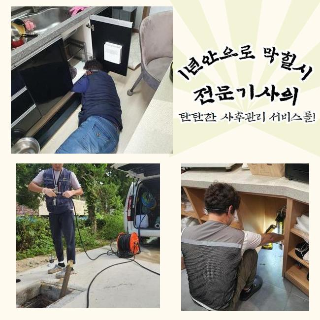
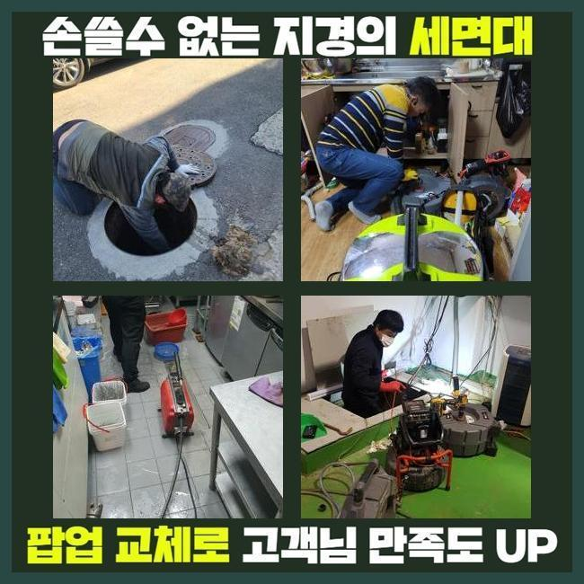
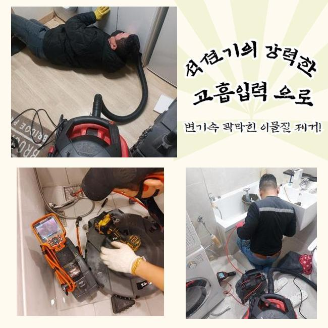
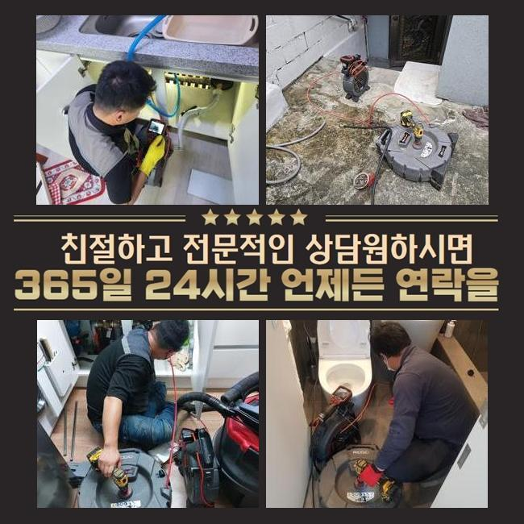
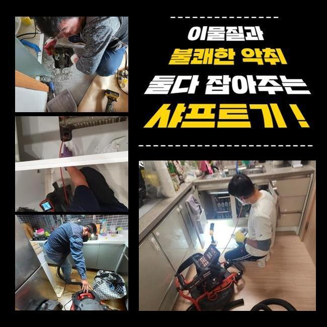
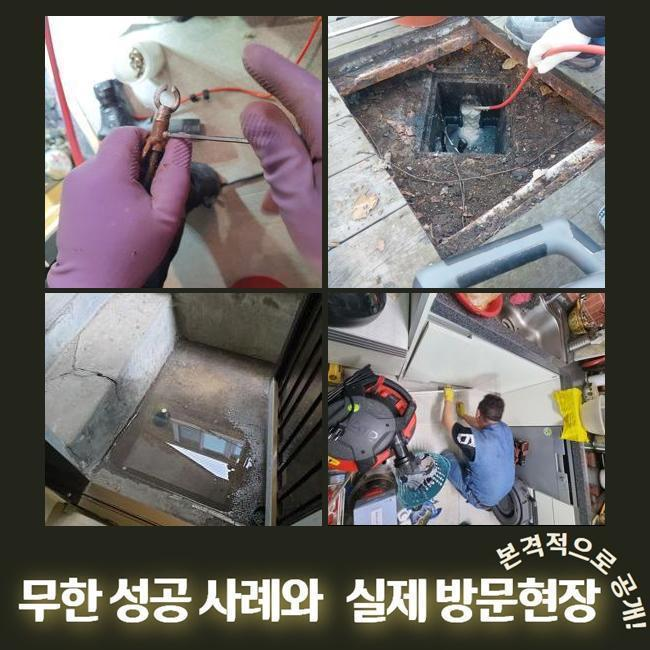

🏠 갈현동욕실역류 원문동 배관뚫기 설비하는곳
용인 하수구막힘 전문 시공 후기

📋 작업 개요
- 위치: 용인
- 서비스 유형: 하수구막힘, 배관막힘, 역류해결, 뚫는업체, 배관청소, 고압세척
- 작업 일시: 2024. 12. 14. 19:15
- 업체명: 하수구수사대 (010-5615-2118)
🔍 문제 상황
갈현동욕실역류 원문동 배관뚫기 설비하는곳
배수시설에 결함이 생기게되어 막히게되는 사태가 심해졌다는 의뢰를 통하여 배수관의 점검들을 실시하고자 서둘러 내방했죠
배수시설은 가볍게 지나쳐선 안되고 역류되거나 악취들이 올라오는 부차적인 현상으로 진행될 여지가 높기에 알맞은 대응이 요구됩니다
해당 상황들을 관찰했을 때에는 되는대로 처리를 떠올리는게 우선입니다
더군다나 배수설비는 내버려둔다면 피해들이 퍼지는 속도들이 빨라지므로 조속한 처리가 중요하게 작용하는건데요
이제부턴 물 순환의 필요성과 이와 관련한 증상이 마주했을 때에 어떤식으로 타개하는게 제대로 된 해결책인지 저희업체가 달려갔던 작업을 바탕으로 안내할게요
고객분의 문의를 통하여 저희의 전문진이 달려간 장소는 다가구 건물이였고 각 가지메인관등이 중앙메인 배수관을 공유했던 구조로 파악되었습니다
막혀버리는 바람에 세대 별로 동시다발적인 증상들이 생겨나게 됐고 덧붙여 아래쪽은 하수를 이용하지 못하게끔 문제가 심했는데요

🔎 원인 분석
💡 전문가 진단: 정밀 진단 장비를 사용하여 슬러지의 고착 여부를 판명하고 타격/세척 작업을 실시했습니다.
저희들은 문제들을 막기위하여 가용되어야할 기기를 마련한 뒤 부랴부랴 해당 주소로 내방드렸는데요
대개 유수의 정체는 여기저기서 발생될 확률이 높아요
전체가구들이 중앙라인을 쓰기에 범위를 기준으로 막혀버리면 전체에 걸쳐 불편들을 끼칩니다
이러한 상황 속에서 서두른 해결이 없다면 문제들은 심화되어 거듭되는 확산을 입히게되요
물들이 안내려가는 원인 중 하나는 심층부에까지 존재하는 고착물들이에요
일상을 지속시키며 빠지는 오수의 경우 잘 안녹는 잔해가 존재합니다
예로 머리카락뭉치나 식재료들은 녹질않기에 하수관에서 켜켜히 누적되죠
해당 오염물이 일정한 위치들에 축적될 시 통로의 이동경로를 방해하게되며 정체가 나타나는것이죠
이러한 이상 증세를 막고자한다면 거름망들을 놓는다거나 정기적으로 클린용액을 구입하여 관리해보는게 도움이 됩니다

🔧 작업 과정
막힘들이 목격되었을 시 실질적인 해결에 가까운것은 전문진들의 조언에 따르는 것입니다
그러나 금액이 부담되어 대개 주위에 존재하는 도구들로 대응을 해보시는 사례들이 많은데요
그러나 이는 비장기적인 방식들에 그치며 더나아가 잔해들을 수직배관 끝까지 흘러가게 만들어 균열들이 생겨나게끔 한다는 사실입니다
그러므로 이러한 시도의 경우 사태를 안좋게하므로 올바른 방법을 통해야 하는데요
저희들은 문제가 분명함을 근본적으로 해결할 목적으로 내시경기기를 사용한 후 내측을 여기저기 검사해봐요
내시경장비라면 각 라인을 진단할 수 있게끔하는 장치로서 가시적으로 검수에 무리가 있는 깊은 지점도 해당 위치들을 어렵지않게 관찰하게 됩니다
이번 계신 곳으로서는 공용배관들을 선두로 하여 넓은 범위에 오염원들이 쌓여있던 모습이였죠
보통는 스프링장치나 샤프트기를 써서 이물을 없애주지만 위같이 길게 막혔을 경우 고압수청소가 필요합니다
해당 작업은 배수관에 적합한 노즐부분을 골라 높은 압력의 물들로 하수도를 세척해내는 방법이겠습니다
고압수청소는 돌과 같이 굳어진 잔해를 깨끗하게 청소해주고 배수관이 계속해서 배수가 안된 상태일때 유용하게 쓰이죠
허나 각 라인의 강도 등에 따라서 고압의 물줄기들이 목표인 관로에 악영향을 가할 수 있기에 노후된 정도를 체크해보고 세척해야하는 범위별로 압력들을 조정하는게 중요하죠
해당 과정을 반복해주면 오래도록 퇴적된 이물들이 제거되는것을 볼 수 있죠
청소 이후에 배수관을 내시경장비로 확인해보면 처음의 모습과는 다르게 배수관의 컨디션이 확실하게 차이난다는것을 관찰하게 됩니다
전문성을 갖추고 장치들을 운용하면 하수구 이러한 결함들을 안정적으로 풀어갈 수 있죠


✅ 작업 완료
저희의 전문가는 고객님들이 물이 안빠져 난처한 상황에 빠지셨다면 조속히 해결하고자 즉시 내방할 채비를 하고 있어요
증상을 인지하셨다면 방치하기보다는 전화하시면 신속하게 여러분들을 돕겠습니다
이러한 문제들로 인한 불편들을 막고자서는 때에 맞춰 관리의 실시가 가장 중요하죠
사용하는 동안에 관리해주시는 방식으로 막혀버리는 사태가 다가오지 못하게 예방에 힘쓰는것이 좋겠습니다



⚠️ 하수구 배관 막힘 예방 및 관리 가이드
- ✅ 머리카락, 비닐, 물티슈 등 물에 분해되지 않는 이물질은 하수구 유입을 절대 금지해 주세요.
- ✅ 하수구 거름망을 씌우고 모여진 이물질은 주기적으로 쓰레기통에 바로 비워주셔야 합니다.
- ✅ 배관 노후가 심할 경우 이물질이 더 쉽게 걸리므로 주기적인 배관 세척(고압세척 등)을 권장합니다.
- ✅ 작업 후 1년 이내 재발 시 하수구수사대에서 무상 A/S 보증 서비스를 제공합니다.
💡 핵심 정리
- 확실한 장비 작업(내시경 점검 및 샤프트 스케일링)으로 원인을 뿌리 뽑습니다.
- 작업 후 1년 이내에 동일한 부위 재발 시 100% 무상 A/S 서비스를 보장합니다.
- 서울 · 경기 · 인천 전 지역에 24시간 언제든 긴급 출동할 수 있도록 항시 대기 중입니다.
❓ 자주 묻는 질문 (FAQ)
🚨 용인 하수구막힘 문제로 고민이신가요?
정확한 원인 진단과 확실한 시공으로 재발 없는 해결을 약속드립니다.
24시간 긴급 출동 | 서울 · 경기 · 인천 전지역 | 1년 내 재발 시 무상 A/S